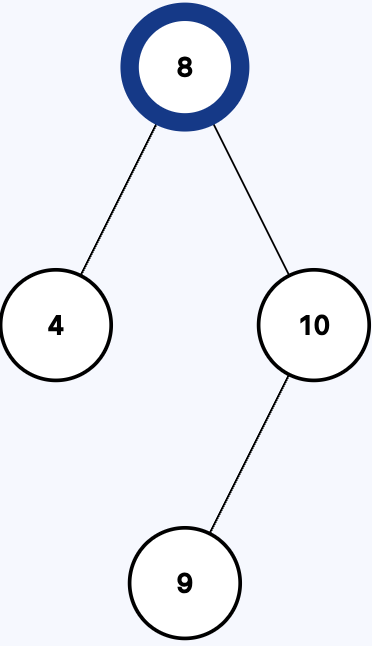
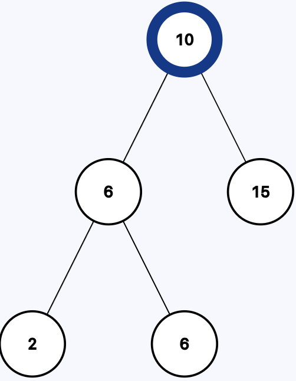
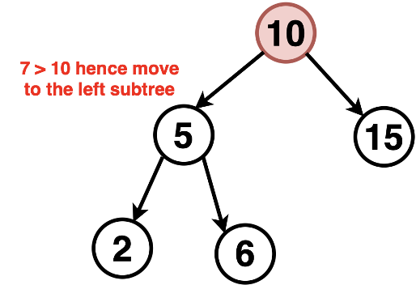
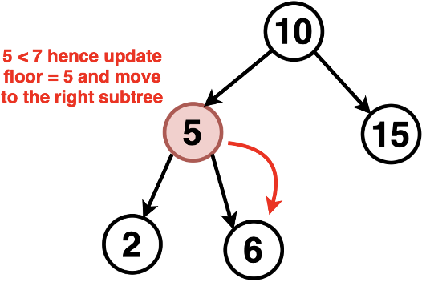
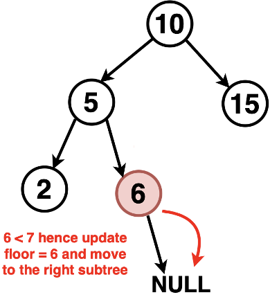
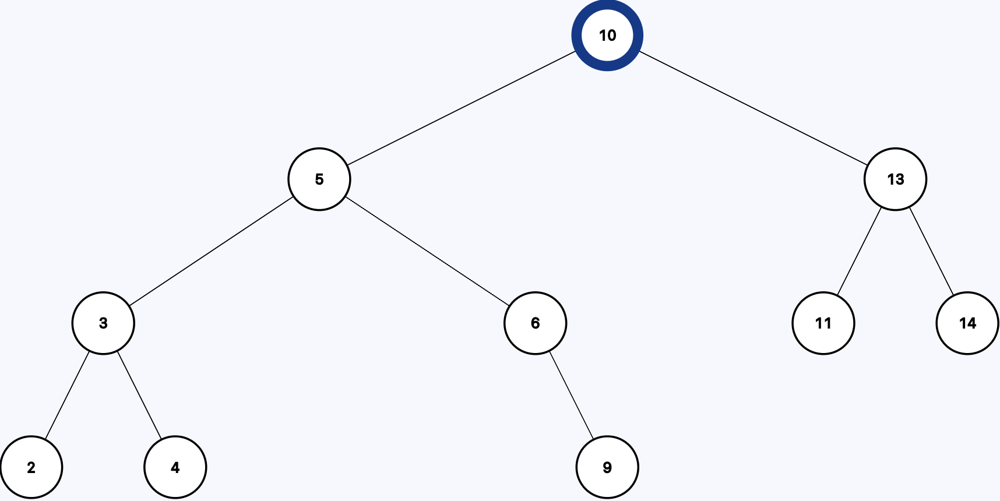
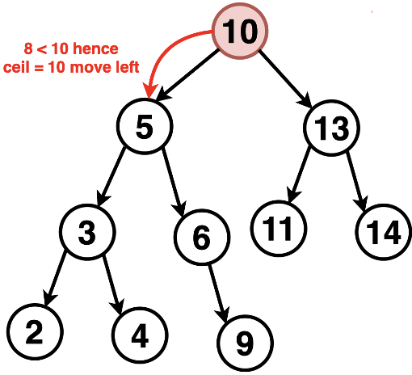
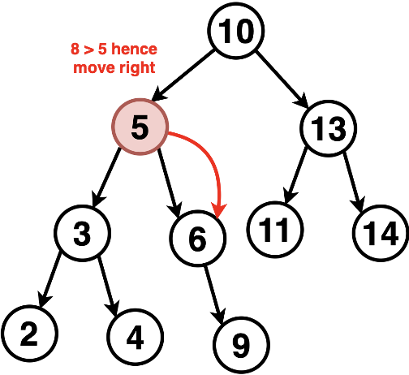
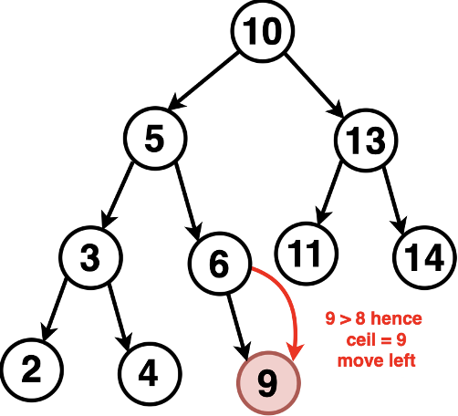

<!DOCTYPE html>
<html lang="en">
  <head>
    <meta charset="utf-8" />
    <meta name="viewport" content="width=device-width, initial-scale=1.0, maximum-scale=1.0, user-scalable=no" />

    <title></title>
    <link rel="stylesheet" href="dist/reveal.css" />
    <link rel="stylesheet" href="dist/theme/iph.css" id="theme" />
    <link rel="stylesheet" href="plugin/highlight/spyder.css" />
	<link rel="stylesheet" href="css/layout.css" />
	<link rel="stylesheet" href="plugin/customcontrols/style.css">


    <script defer src="dist/fontawesome/all.min.js"></script>

	<script type="text/javascript">
		var forgetPop = true;
		function onPopState(event) {
			if(forgetPop){
				forgetPop = false;
			} else {
				parent.postMessage(event.target.location.href, "app://obsidian.md");
			}
        }
		window.onpopstate = onPopState;
		window.onmessage = event => {
			if(event.data == "reload"){
				window.document.location.reload();
			}
			forgetPop = true;
		}

		function fitElements(){
			const itemsToFit = document.getElementsByClassName('fitText');
			for (const item in itemsToFit) {
				if (Object.hasOwnProperty.call(itemsToFit, item)) {
					var element = itemsToFit[item];
					fitElement(element,1, 1000);
					element.classList.remove('fitText');
				}
			}
		}

		function fitElement(element, start, end){

			let size = (end + start) / 2;
			element.style.fontSize = `${size}px`;

			if(Math.abs(start - end) < 1){
				while(element.scrollHeight > element.offsetHeight){
					size--;
					element.style.fontSize = `${size}px`;
				}
				return;
			}

			if(element.scrollHeight > element.offsetHeight){
				fitElement(element, start, size);
			} else {
				fitElement(element, size, end);
			}		
		}


		document.onreadystatechange = () => {
			fitElements();
			if (document.readyState === 'complete') {
				if (window.location.href.indexOf("?export") != -1){
					parent.postMessage(event.target.location.href, "app://obsidian.md");
				}
				if (window.location.href.indexOf("print-pdf") != -1){
					let stateCheck = setInterval(() => {
						clearInterval(stateCheck);
						window.print();
					}, 250);
				}
			}
	};


        </script>
  </head>
  <body>
    <div class="reveal">
      <div class="slides"><section  data-markdown><script type="text/template"><!-- .slide: class="has-light-background drop" data-background-color="#f8f8f8" -->
<div class="" style="position: absolute; left: 0px; top: 0px; height: 700px; width: 960px; min-height: 700px; display: flex; flex-direction: column; align-items: center; justify-content: center" absolute="true">

### Estructura de Datos y Algoritmos - EDA

####  *BST III*

[Eduardo Rosales](mailto:ee.rosales24@uniandes.edu.co)

Departamento de Ingeniería de Sistemas y Computación

Universidad de los Andes
</div></script></section><section  data-markdown><script type="text/template"><!-- .slide: class="has-light-background drop" data-background-color="#f8f8f8" -->
<div class="" style="position: absolute; left: 0px; top: 0px; height: 700px; width: 960px; min-height: 700px; display: flex; flex-direction: column; align-items: center; justify-content: center" absolute="true">

## Implementación básica de un BST

- Cada nodo tiene:
	- Una **llave** (`key`)
	- Un **valor** asociado (`value`)
	- Enlaces a un **subárbol izquierdo** y a un **subárbol derecho**
- Todos los valores **menores** van al **subárbol izquierdo**
- Todos los valores **mayores** van al **subárbol derecho**
</div></script></section><section  data-markdown><script type="text/template"><!-- .slide: class="has-light-background drop" data-background-color="#f8f8f8" -->
<div class="" style="position: absolute; left: 0px; top: 0px; height: 700px; width: 960px; min-height: 700px; display: flex; flex-direction: column; align-items: center; justify-content: center" absolute="true">

### `new_map()`

```python
def new_map():
    """
    Crea y retorna una tabla de símbolos ordenada basada en un árbol binario
    de búsqueda (BST) vacío.

    La tabla de símbolos es un diccionario con el siguiente atributo:
    - root: Raíz del árbol, inicializada en ``None``.

    :returns: Una tabla de símbolos vacía basada en un BST
    :rtype: dict
    """
    bst = {"root": None}
    return bst
```


- Inicializa un diccionario que servirá como un BST

- La llave "root" apunta a la raíz (inicialmente `None`)

- **¿Complejidad?**
	- &shy;<!-- .element: class="fragment" data-fragment-index="1" -->O(1)
</div></script></section><section  data-markdown><script type="text/template"><!-- .slide: class="has-light-background drop" data-background-color="#f8f8f8" -->
<div class="" style="position: absolute; left: 0px; top: 0px; height: 700px; width: 960px; min-height: 700px; display: flex; flex-direction: column; align-items: center; justify-content: center" absolute="true">

### `size_tree()`  (1/2)

```python
def size_tree(root):
    """
    Retorna la cantidad de elementos en el subárbol cuya raíz es el nodo dado.

    :param root: Nodo raíz del subárbol
    :type root: dict | None

    :returns: Número de elementos en el subárbol
    :rtype: int
    """
    return 0 if root is None else root["size"]
```


- Verifica si el nodo es `None`:

	- Si lo es, no hay nada que contar

- Si no es `None`
	- Retorna el atributo `"size"` del nodo
		- "size" se mantiene actualizado en cada inserción o eliminación
</div></script></section><section  data-markdown><script type="text/template"><!-- .slide: class="has-light-background drop" data-background-color="#f8f8f8" -->
<div class="" style="position: absolute; left: 0px; top: 0px; height: 700px; width: 960px; min-height: 700px; display: flex; flex-direction: column; align-items: center; justify-content: center" absolute="true">

### `size_tree()`  (2/2)

```python
def size_tree(root):
    """
    Retorna la cantidad de elementos en el subárbol cuya raíz es el nodo dado.

    :param root: Nodo raíz del subárbol
    :type root: dict | None

    :returns: Número de elementos en el subárbol
    :rtype: int
    """
    return 0 if root is None else root["size"]
```


- **¿Complejidad?**
	- &shy;<!-- .element: class="fragment" data-fragment-index="1" -->O(1)
</div></script></section><section  data-markdown><script type="text/template"><!-- .slide: class="has-light-background drop" data-background-color="#f8f8f8" -->
<div class="" style="position: absolute; left: 0px; top: 0px; height: 700px; width: 960px; min-height: 700px; display: flex; flex-direction: column; align-items: center; justify-content: center" absolute="true">

### `size()` 


```python
def size(my_bst):
    """
    Retorna la cantidad de elementos en la tabla de símbolos basada en un BST.

    :param my_bst: Árbol de búsqueda
    :type my_bst: dict

    :returns: Número de elementos en el BST
    :rtype: int
    """
    return size_tree(my_bst["root"])
```


- Calcula el tamaño total del BST (cuántos nodos hay)

- La estrategia es invocar a `size_tree()` 
	- Para contar los nodos **desde la raíz**

- **¿Complejidad?**
	- &shy;<!-- .element: class="fragment" data-fragment-index="1" -->La misma de `size_tree()`
</div></script></section><section  data-markdown><script type="text/template"><!-- .slide: class="has-light-background drop" data-background-color="#f8f8f8" -->
<div class="" style="position: absolute; left: 0px; top: 0px; height: 700px; width: 960px; min-height: 700px; display: flex; flex-direction: column; align-items: center; justify-content: center" absolute="true">

### Separación de responsabilidades

- En el curso se usa un enfoque de 
	- "función principal + función recursiva"
- La función **principal** (Ej: `put()`) 
	- Expone una interfaz limpia
- Llama a una **función recursiva interna** (Ej: `insert_node()`) 
	- Que hace el trabajo real
</div></script></section><section  data-markdown><script type="text/template"><!-- .slide: class="has-light-background drop" data-background-color="#f8f8f8" -->
<div class="" style="position: absolute; left: 0px; top: 0px; height: 700px; width: 960px; min-height: 700px; display: flex; flex-direction: column; align-items: center; justify-content: center" absolute="true">

###  Ventajas de la separación de responsabilidades

- **Claridad y separación de responsabilidades**  
      - `put()` gestiona el BST completo  
      - `insert_node()` se enfoca solo en el subárbol recursivo
    
- **Reutilización y pruebas más simples**  
      - La función recursiva se puede probar de forma aislada  
      - **Se puede usar en otras operaciones internas**
    
- **Evita exponer lógica recursiva al usuario final**  
	- La API pública (`put`, `get`, `remove`) 
		- Se mantiene simple y predecible
</div></script></section><section  data-markdown><script type="text/template"><!-- .slide: class="has-light-background drop" data-background-color="#f8f8f8" -->
<div class="" style="position: absolute; left: 0px; top: 0px; height: 700px; width: 960px; min-height: 700px; display: flex; flex-direction: column; align-items: center; justify-content: center" absolute="true">

### Alternativa a la separación de responsabilidades

- Usar una función anidada
	- Definir la función recursiva **dentro de la principal**:

```python
def put(...):     
    def insert_node(...):       
    # Lógica recursiva     ...

    # Llamado a la función anidada
```


- **Ventajas**:  
	- Encapsula completamente la lógica  
	- Útil si la función recursiva es muy específica y no se reutiliza
    
- **Desventajas**:  
	- Menos legible si crece 
	- No reutilizable fuera de su contexto
</div></script></section><section  data-markdown><script type="text/template"><!-- .slide: class="has-light-background drop" data-background-color="#f8f8f8" -->
<div class="" style="position: absolute; left: 0px; top: 0px; height: 700px; width: 960px; min-height: 700px; display: flex; flex-direction: column; align-items: center; justify-content: center" absolute="true">

## `is_empty()`

```python
def is_empty(my_bst):
    """
    Informa si la tabla de símbolos (BST) está vacía.

    :param my_bst: El árbol de búsqueda
    :type my_bst: dict

    :returns: True si está vacío, False en caso contrario
    :rtype: bool
    """
    return my_bst["root"] is None
```


- Verifica si la raíz `"root"` del BST es `None`
	- `True` si no hay nodos (BST vacío)
	- `False` si existe al menos un nodo
		- `my_bst["root"]`sería distinto de `None`

- **¿Complejidad?**
	- &shy;<!-- .element: class="fragment" data-fragment-index="1" -->O(1)
</div></script></section><section  data-markdown><script type="text/template"><!-- .slide: class="has-light-background drop" data-background-color="#f8f8f8" -->
<div class="" style="position: absolute; left: 0px; top: 0px; height: 700px; width: 960px; min-height: 700px; display: flex; flex-direction: column; align-items: center; justify-content: center" absolute="true">

### `insert_node()`  (1/9)

```python
def insert_node(root, key, value):
    """
    Inserta una pareja (key, value) en un BST.

    - Si el árbol está vacío (root es None), se crea un nodo con la llave 
      y el valor.
    - Si la llave ya existe, se reemplaza el valor.
    - Si la nueva llave es menor, se inserta recursivamente en el subárbol
      izquierdo.
    - Si es mayor, se inserta en el subárbol derecho.

    :param root: Raíz del árbol o None si está vacío.
    :type root: dict
    :param key: Llave a insertar o actualizar.
    :type key: any
    :param value: Valor asociado a la llave.
    :type value: any
    :returns: Nodo raíz actualizado después de la inserción.
    :rtype: dict
    """
```
</div></script></section><section  data-markdown><script type="text/template"><!-- .slide: class="has-light-background drop" data-background-color="#f8f8f8" -->
<div class="" style="position: absolute; left: 0px; top: 0px; height: 700px; width: 960px; min-height: 700px; display: flex; flex-direction: column; align-items: center; justify-content: center" absolute="true">

### `insert_node()`  (2/9)

```python
def insert_node(root, key, value):
    """
    ...
    - Si el árbol está vacío (root es None), se crea un nodo con la llave 
      y el valor.
    ...
    """
    if root is None:
        root = {
            "key": key,
            "value": value,
            "size": 1,
            "left": None,
            "right": None,
        }
    ...
```

- Como el árbol está vacío
	- Se inserta el primer nodo
- Nota: `bst_node.py`  contiene la función: `new_node(key, value)`
	- En su implementación de un BST
		- Se debería usar esta función
</div></script></section><section  data-markdown><script type="text/template"><!-- .slide: class="has-light-background drop" data-background-color="#f8f8f8" -->
<div class="" style="position: absolute; left: 0px; top: 0px; height: 700px; width: 960px; min-height: 700px; display: flex; flex-direction: column; align-items: center; justify-content: center" absolute="true">

### `insert_node()`  (3/9)

```python
def insert_node(root, key, value):
    """
    ...
    - Si la llave ya existe, se reemplaza el valor.
    ...
    """
    ...
    elif key == root["key"]:
        root["value"] = value
    ...
```

- Como la llave ya existe
	- Se trata solo de una actualización del valor
</div></script></section><section  data-markdown><script type="text/template"><!-- .slide: class="has-light-background drop" data-background-color="#f8f8f8" -->
<div class="" style="position: absolute; left: 0px; top: 0px; height: 700px; width: 960px; min-height: 700px; display: flex; flex-direction: column; align-items: center; justify-content: center" absolute="true">

### `insert_node()`  (4/9)

```python
def insert_node(root, key, value):
    """
    ...
    - Si es menor, se inserta en el subárbol izquierdo.
    - Si es mayor, se inserta en el subárbol derecho.
    ...
    """
    ...
    else:
        if key < root["key"]:
            root["left"] = insert_node(root["left"], key, value)
        else:
            root["right"] = insert_node(root["right"], key, value)
    ...
```

- El árbol no está vacío y la llave no existe, entonces
	- Se hace la inserción siguiendo las reglas BST
	- Valor menor:
		- Insertar recursivamente a la izquierda
	- Valor mayor:
		- Insertar recursivamente a la derecha
</div></script></section><section  data-markdown><script type="text/template"><!-- .slide: class="has-light-background drop" data-background-color="#f8f8f8" -->
<div class="" style="position: absolute; left: 0px; top: 0px; height: 700px; width: 960px; min-height: 700px; display: flex; flex-direction: column; align-items: center; justify-content: center" absolute="true">

### `insert_node()`  (5/9)

```python
        if key < root["key"]:
            root["left"] = insert_node(root["left"], key, value)
        else:
            root["right"] = insert_node(root["right"], key, value)
```

- Se debe llegar al lugar correcto de inserción
    - Si `key < root["key"]`:
        - **Repite** la lógica de inserción en el **subárbol izquierdo**
        - Resultado de la recursión se asigna a `root["left"]`
            
    - Si `key > root["key"]`:
        - **Repite** la lógica de inserción en el **subárbol derecho**
        - Resultado de la recursión se asigna a `root["right"]`
</div></script></section><section  data-markdown><script type="text/template"><!-- .slide: class="has-light-background drop" data-background-color="#f8f8f8" -->
<div class="" style="position: absolute; left: 0px; top: 0px; height: 700px; width: 960px; min-height: 700px; display: flex; flex-direction: column; align-items: center; justify-content: center" absolute="true">

### `insert_node()`  (6/9)

```python
    if root is None:
        root = {
            "key": key,
            "value": value,
            "size": 1,
            "left": None,
            "right": None,
        }
    ...
        if key < root["key"]:
            root["left"] = insert_node(root["left"], key, value)
        else:
            root["right"] = insert_node(root["right"], key, value)
```

- El llamado recursivo eventualmente llegará a
	- `root == None`
- Ese será el **caso base**
	- Donde se **crea un nuevo nodo**
</div></script></section><section  data-markdown><script type="text/template"><!-- .slide: class="has-light-background drop" data-background-color="#f8f8f8" -->
<div class="" style="position: absolute; left: 0px; top: 0px; height: 700px; width: 960px; min-height: 700px; display: flex; flex-direction: column; align-items: center; justify-content: center" absolute="true">

### `insert_node()`  (7/9)

```python
    else:
        if key < root["key"]:
            root["left"] = insert_node(root["left"], key, value)
        else:
            root["right"] = insert_node(root["right"], key, value)

        # Actualizar el tamaño del subárbol solo si hubo inserción:
        root["size"] = 1 + size_tree(root["left"]) + size_tree(root["right"])
```

- Finalmente, se recalcula el tamaño del BST
	- Esto **únicamente** se hace cuando hubo inserción
		- No en actualización
</div></script></section><section  data-markdown><script type="text/template"><!-- .slide: class="has-light-background drop" data-background-color="#f8f8f8" -->
<div class="" style="position: absolute; left: 0px; top: 0px; height: 700px; width: 960px; min-height: 700px; display: flex; flex-direction: column; align-items: center; justify-content: center" absolute="true">

### `insert_node()`  (8/9)

```python[15]
def insert_node(root, key, value):
    if root is None:
        ...

    elif key == root["key"]:
        ...

    else:
        if key < root["key"]:
            ...
        else:
            ...
        root["size"] = 1 + size_tree(root["left"]) + size_tree(root["right"])
        
    return root
```

- Es importante comprender que se retorna
	- **La raíz** del árbol ya actualizado
</div></script></section><section  data-markdown><script type="text/template"><!-- .slide: class="has-light-background drop" data-background-color="#f8f8f8" -->
<div class="" style="position: absolute; left: 0px; top: 0px; height: 700px; width: 960px; min-height: 700px; display: flex; flex-direction: column; align-items: center; justify-content: center" absolute="true">

### `insert_node()`  (9/9)

- **¿Complejidad?**

	-  **Mejor caso: O(1)**  
	  - Si el árbol está vacío (`root is None`)  
		  - Se crea un nodo sin llamadas recursivas  
			 
	  
	- **Caso promedio: ≈ O(log n)**  
		- BST balanceado
			- Se hacen ≈ log n llamadas recursivas  
	  
	- **Peor caso: ≈ O(n)**
		- BST desbalanceado (ej: inserciones ordenadas) 
			- Puede convertirse en árbol degenerado
			- Se recorren todos los niveles hasta encontrar posición
</div></script></section><section  data-markdown><script type="text/template"><!-- .slide: class="has-light-background drop" data-background-color="#f8f8f8" -->
<div class="" style="position: absolute; left: 0px; top: 0px; height: 700px; width: 960px; min-height: 700px; display: flex; flex-direction: column; align-items: center; justify-content: center" absolute="true">

### `put()`

``` python
def put(my_bst, key, value):
    """
    Inserta una pareja (key, value) en el árbol binario de búsqueda (BST).

    - Si la llave no existe, se inserta un nuevo nodo.
    - Si la llave ya existe, se reemplaza su valor.

    :param my_bst: Árbol binario de búsqueda (BST).
    :type my_bst: dict
    :param key: Llave a insertar o actualizar.
    :type key: any
    :param value: Valor asociado a la llave.
    :type value: any
    :returns: BST actualizado.
    :rtype: dict
    """
    my_bst["root"] = insert_node(my_bst["root"], key, value)
    return my_bst
```

- `insert_node()` retorna la raíz del árbol actualizado
	- Entonces, esta se asigna como la **nueva raíz** del árbol que recibe `put()`
	
- **¿Complejidad?**
	- &shy;<!-- .element: class="fragment" data-fragment-index="1" -->La misma de `insert_node()`
</div></script></section><section  data-markdown><script type="text/template"><!-- .slide: class="has-light-background drop" data-background-color="#f8f8f8" -->
<div class="" style="position: absolute; left: 0px; top: 0px; height: 700px; width: 960px; min-height: 700px; display: flex; flex-direction: column; align-items: center; justify-content: center" absolute="true">

### `get_node()` (1/3)


```python
def get_node(root, key):
    """
    Busca una llave en el subárbol dado y retorna su valor asociado.

    Si la llave no está presente, retorna None.

    :param root: Nodo raíz del subárbol actual.
    :type root: dict or None
    :param key: Llave a buscar.
    :type key: any
    :return: Valor asociado a la llave, o None si no se encuentra.
    :rtype: any
    """
```
</div></script></section><section  data-markdown><script type="text/template"><!-- .slide: class="has-light-background drop" data-background-color="#f8f8f8" -->
<div class="" style="position: absolute; left: 0px; top: 0px; height: 700px; width: 960px; min-height: 700px; display: flex; flex-direction: column; align-items: center; justify-content: center" absolute="true">

### `get_node()` (2/3)


```python
def get_node(root, key):
    result = None

    if root is not None:
        if key == root["key"]:
            result = root["value"]
        elif key < root["key"]:
            result = get_node(root["left"], key)
        else:
            result = get_node(root["right"], key)

    return result
```

- Compara la llave buscada con la del nodo actual:
	- Igual → retorna el valor
	- Menor → busca en el subárbol izquierdo
	- Mayor → busca en el subárbol derecho
Caso base:
- Si root es `None`
	- La llave no existe y retorna `None`
</div></script></section><section  data-markdown><script type="text/template"><!-- .slide: class="has-light-background drop" data-background-color="#f8f8f8" -->
<div class="" style="position: absolute; left: 0px; top: 0px; height: 700px; width: 960px; min-height: 700px; display: flex; flex-direction: column; align-items: center; justify-content: center" absolute="true">

### `get_node()` (2/3)

- **Mejor caso: O(1)**  
  - Si la llave buscada es la raíz (`key == root["key"]`)  o está vacío
  - Una comparación  
	  - Sin llamadas recursivas
    
- **Caso promedio: ≈ O(log n)**  
  - BST balanceado
	  - Se recorren ≈ log n niveles hasta encontrar la llave  
  - Una comparación y una llamada recursiva por nivel
    
- **Peor caso: ≈ O(n)**  
  - BST desbalanceado 
	  - Puede convertirse en árbol degenerado
	  - Se recorren hasta `n` nodos en línea recta
</div></script></section><section  data-markdown><script type="text/template"><!-- .slide: class="has-light-background drop" data-background-color="#f8f8f8" -->
<div class="" style="position: absolute; left: 0px; top: 0px; height: 700px; width: 960px; min-height: 700px; display: flex; flex-direction: column; align-items: center; justify-content: center" absolute="true">

### `get()`

```python
def get(my_bst, key):
    """
    Busca una llave en el BST y retorna su valor asociado.

    Retorna None si la llave no está presente.

    :param my_bst: Árbol binario de búsqueda (BST).
    :type my_bst: dict
    :param key: Llave a buscar.
    :type key: any
    :return: Valor asociado a la llave, o None si no se encuentra.
    :rtype: any
    """
    return get_node(my_bst["root"], key)
```


- Solo llama a `get_node()` pasando la raíz `my_bst["root"]`
	- Retorna el **valor asociado** a la llave, si existe
	- Si la llave **no está en el árbol**, retorna `None`

- **¿Complejidad?**
	- &shy;<!-- .element: class="fragment" data-fragment-index="1" -->La misma de `get_node()`
</div></script></section><section  data-markdown><script type="text/template"><!-- .slide: class="has-light-background drop" data-background-color="#f8f8f8" -->
<div class="" style="position: absolute; left: 0px; top: 0px; height: 700px; width: 960px; min-height: 700px; display: flex; flex-direction: column; align-items: center; justify-content: center" absolute="true">

### Otras operaciones en BSTs
</div></script></section><section  data-markdown><script type="text/template"><!-- .slide: class="has-light-background drop" data-background-color="#f8f8f8" -->
<div class="" style="position: absolute; left: 0px; top: 0px; height: 700px; width: 960px; min-height: 700px; display: flex; flex-direction: column; align-items: center; justify-content: center" absolute="true">

###  `floor()` en un BST
</div></script></section><section  data-markdown><script type="text/template"><!-- .slide: class="has-light-background drop" data-background-color="#f8f8f8" -->
<div class="" style="position: absolute; left: 0px; top: 0px; height: 700px; width: 960px; min-height: 700px; display: flex; flex-direction: column; align-items: center; justify-content: center" absolute="true">

### `floor()`

- Dado un BST y una llave `key`, retorna:

	- La **mayor llave** del árbol que sea **≤ key**:
    
		- Si `key` está en el árbol → retorna `key`
    
		- Si no está → retorna la mayor que sea menor a `key`
    
		- Si no existe ninguna → retorna `None`
</div></script></section><section  data-markdown><script type="text/template"><!-- .slide: class="has-light-background drop" data-background-color="#f8f8f8" -->
<div class="" style="position: absolute; left: 0px; top: 0px; height: 700px; width: 960px; min-height: 700px; display: flex; flex-direction: column; align-items: center; justify-content: center" absolute="true">

### Estudiemos los tres casos


<!-- .slide: class="has-light-background" data-background-color="#f8f8f8" -->
</div></script></section><section  data-markdown><script type="text/template"><!-- .slide: class="has-light-background drop" data-background-color="#f8f8f8" -->
<div class="" style="position: absolute; left: 0px; top: 0px; height: 700px; width: 960px; min-height: 700px; display: flex; flex-direction: column; align-items: center; justify-content: center" absolute="true">

### Caso 1: Key está en el árbol (1/2)

- `floor(9)` → `9`


</div></script></section><section  data-markdown><script type="text/template"><!-- .slide: class="has-light-background drop" data-background-color="#f8f8f8" -->
<div class="" style="position: absolute; left: 0px; top: 0px; height: 700px; width: 960px; min-height: 700px; display: flex; flex-direction: column; align-items: center; justify-content: center" absolute="true">

### Caso 1: Key está en el árbol (2/2)


- **Nodo 8**:
    
    - `9 > 8` → Posible `floor = 8`
	    - Ir a la derecha
        
- **Nodo 10**:
    - `9 < 10` → Ir a la izquierda
        
- **Nodo 9**:
    - `9 == 9` → Coincidencia exacta
</div></script></section><section  data-markdown><script type="text/template"><!-- .slide: class="has-light-background drop" data-background-color="#f8f8f8" -->
<div class="" style="position: absolute; left: 0px; top: 0px; height: 700px; width: 960px; min-height: 700px; display: flex; flex-direction: column; align-items: center; justify-content: center" absolute="true">

### Caso 2: Key no está en el árbol - más cercano menor (1/2)

- `floor(7)` → `4`


</div></script></section><section  data-markdown><script type="text/template"><!-- .slide: class="has-light-background drop" data-background-color="#f8f8f8" -->
<div class="" style="position: absolute; left: 0px; top: 0px; height: 700px; width: 960px; min-height: 700px; display: flex; flex-direction: column; align-items: center; justify-content: center" absolute="true">

### Caso 2: Key no está en el árbol - más cercano menor (2/2)


- **Nodo 8**:    
    - `7 < 8` → Ir a la izquierda
        
- **Nodo 4**:
    - `7 > 4` → posible floor = 4
	    - Ir a la derecha (no hay nada)
        
- No se encuentra un mejor candidato → se retorna **4**
</div></script></section><section  data-markdown><script type="text/template"><!-- .slide: class="has-light-background drop" data-background-color="#f8f8f8" -->
<div class="" style="position: absolute; left: 0px; top: 0px; height: 700px; width: 960px; min-height: 700px; display: flex; flex-direction: column; align-items: center; justify-content: center" absolute="true">

### Caso 3: Key no está en el árbol - no existe floor (1/2)

- `floor(3)` → `None`


</div></script></section><section  data-markdown><script type="text/template"><!-- .slide: class="has-light-background drop" data-background-color="#f8f8f8" -->
<div class="" style="position: absolute; left: 0px; top: 0px; height: 700px; width: 960px; min-height: 700px; display: flex; flex-direction: column; align-items: center; justify-content: center" absolute="true">

### Caso 3: Key no está en el árbol - no existe floor (2/2)


- **Nodo 8**:    
    - `3 < 8` → Ir a la izquierda
        
- **Nodo 4**:
    - `3 < 4`
	    - Ir a la izquierda (no hay nada)
        
- No se encuentra un mejor candidato → se retorna `None`
</div></script></section><section  data-markdown><script type="text/template"><!-- .slide: class="has-light-background drop" data-background-color="#f8f8f8" -->
<div class="" style="position: absolute; left: 0px; top: 0px; height: 700px; width: 960px; min-height: 700px; display: flex; flex-direction: column; align-items: center; justify-content: center" absolute="true">

### `floor()`- Ideas clave de implementación

- Al recorrer el árbol:
    - Si `key == node.key` → retorno inmediato
    - Si `key < node.key` → búsqueda en el subárbol izquierdo
    - Si `key > node.key`:
        - Buscar en subárbol derecho
        - Si se encuentra algo → retornarlo
        - Si no → retornar el nodo actual como mejor candidato
</div></script></section><section  data-markdown><script type="text/template"><!-- .slide: class="has-light-background drop" data-background-color="#f8f8f8" -->
<div class="" style="position: absolute; left: 0px; top: 0px; height: 700px; width: 960px; min-height: 700px; display: flex; flex-direction: column; align-items: center; justify-content: center" absolute="true">

### `floor()` - Complejidad temporal

- **Mejor caso: O(1)**
    
    - Si `key` está en la raíz o árbol vacío
        
- **Caso promedio: O(log n)**
    
    - Si el árbol está balanceado
        
- **Peor caso: O(n)**
    
    - Si el árbol está desbalanceado
</div></script></section><section  data-markdown><script type="text/template"><!-- .slide: class="has-light-background drop" data-background-color="#f8f8f8" -->
<div class="" style="position: absolute; left: 0px; top: 0px; height: 700px; width: 960px; min-height: 700px; display: flex; flex-direction: column; align-items: center; justify-content: center" absolute="true">

### Quiz I
 
- Encuentre  `floor(7)`


</div></script></section><section  data-markdown><script type="text/template"><!-- .slide: class="has-light-background drop" data-background-color="#f8f8f8" -->
<div class="" style="position: absolute; left: 0px; top: 0px; height: 700px; width: 960px; min-height: 700px; display: flex; flex-direction: column; align-items: center; justify-content: center" absolute="true">

### Quiz I - Solución (1/3)




**Nodo actual = 10**

- `7 < 10`
	- Subárbol izquierdo
</div></script></section><section  data-markdown><script type="text/template"><!-- .slide: class="has-light-background drop" data-background-color="#f8f8f8" -->
<div class="" style="position: absolute; left: 0px; top: 0px; height: 700px; width: 960px; min-height: 700px; display: flex; flex-direction: column; align-items: center; justify-content: center" absolute="true">

### Quiz I - Solución (2/3)
 




**Nodo actual = 5**

- `7 > 5` 
	- Posible candidato → 5
    
- Ir a la derecha para buscar un mejor valor
</div></script></section><section  data-markdown><script type="text/template"><!-- .slide: class="has-light-background drop" data-background-color="#f8f8f8" -->
<div class="" style="position: absolute; left: 0px; top: 0px; height: 700px; width: 960px; min-height: 700px; display: flex; flex-direction: column; align-items: center; justify-content: center" absolute="true">

### Quiz I - Solución (3/3)




**Nodo actual = 6**

- `7 > 6`
	- Mejor candidato →  6
    
- Ir a derecha → es `None`
	- No se encuentra valor más cercano 
		- Se retorna el último válido (**6**)
</div></script></section><section  data-markdown><script type="text/template"><!-- .slide: class="has-light-background drop" data-background-color="#f8f8f8" -->
<div class="" style="position: absolute; left: 0px; top: 0px; height: 700px; width: 960px; min-height: 700px; display: flex; flex-direction: column; align-items: center; justify-content: center" absolute="true">

### `ceiling()`

- Dado un BST y una llave `key`, retorna:
    
    - La **menor llave** del árbol que sea **≥ key**
        
        - Si `key` está en el árbol → retorna `key`
            
        - Si no está → retorna la menor que sea mayor a `key`
</div></script></section><section  data-markdown><script type="text/template"><!-- .slide: class="has-light-background drop" data-background-color="#f8f8f8" -->
<div class="" style="position: absolute; left: 0px; top: 0px; height: 700px; width: 960px; min-height: 700px; display: flex; flex-direction: column; align-items: center; justify-content: center" absolute="true">

### Estudiemos los tres casos


<!-- .slide: class="has-light-background" data-background-color="#f8f8f8" -->
</div></script></section><section  data-markdown><script type="text/template"><!-- .slide: class="has-light-background drop" data-background-color="#f8f8f8" -->
<div class="" style="position: absolute; left: 0px; top: 0px; height: 700px; width: 960px; min-height: 700px; display: flex; flex-direction: column; align-items: center; justify-content: center" absolute="true">

### Caso 1: Key está en el árbol (1/2)

- `ceiling(9)` → `9`


</div></script></section><section  data-markdown><script type="text/template"><!-- .slide: class="has-light-background drop" data-background-color="#f8f8f8" -->
<div class="" style="position: absolute; left: 0px; top: 0px; height: 700px; width: 960px; min-height: 700px; display: flex; flex-direction: column; align-items: center; justify-content: center" absolute="true">

### Caso 1: Key está en el árbol (2/2)


- **Nodo 8**:
    
    - `9 > 8` → Ir a la derecha
        
- **Nodo 10**:
    
    - `9 < 10` → Ir a la izquierda
        
- **Nodo 9**:
    
    - `9 == 9` → Coincidencia exacta → se retorna `9`
</div></script></section><section  data-markdown><script type="text/template"><!-- .slide: class="has-light-background drop" data-background-color="#f8f8f8" -->
<div class="" style="position: absolute; left: 0px; top: 0px; height: 700px; width: 960px; min-height: 700px; display: flex; flex-direction: column; align-items: center; justify-content: center" absolute="true">

### Caso 2: Key no está en el árbol - más cercano mayor (1/2)

- `ceiling(7)` → `8`


</div></script></section><section  data-markdown><script type="text/template"><!-- .slide: class="has-light-background drop" data-background-color="#f8f8f8" -->
<div class="" style="position: absolute; left: 0px; top: 0px; height: 700px; width: 960px; min-height: 700px; display: flex; flex-direction: column; align-items: center; justify-content: center" absolute="true">

### Caso 2: Key no está en el árbol - más cercano mayor (2/2)


- **Nodo 8**:
    
    - `7 < 8` → Posible ceiling = 8
        
        - Ir a la izquierda
            
- **Nodo 4**:
    
    - `7 > 4` → Ir a la derecha (no hay nada)
        
- No se encuentra mejor candidato → se retorna **8**
</div></script></section><section  data-markdown><script type="text/template"><!-- .slide: class="has-light-background drop" data-background-color="#f8f8f8" -->
<div class="" style="position: absolute; left: 0px; top: 0px; height: 700px; width: 960px; min-height: 700px; display: flex; flex-direction: column; align-items: center; justify-content: center" absolute="true">

### Caso 3: Key no está en el árbol - no existe ceiling (1/2)

- `ceiling(16)` → `None`


</div></script></section><section  data-markdown><script type="text/template"><!-- .slide: class="has-light-background drop" data-background-color="#f8f8f8" -->
<div class="" style="position: absolute; left: 0px; top: 0px; height: 700px; width: 960px; min-height: 700px; display: flex; flex-direction: column; align-items: center; justify-content: center" absolute="true">

### Caso 3: Key no está en el árbol - no existe ceiling (2/2)


- **Nodo 8**:
    
    - `16 > 8` → Ir a la derecha
        
- **Nodo 10**:
    - `16 > 10` → Ir a la derecha (no hay nada)
        
- No se encuentra un nodo válido → se retorna `None`
</div></script></section><section  data-markdown><script type="text/template"><!-- .slide: class="has-light-background drop" data-background-color="#f8f8f8" -->
<div class="" style="position: absolute; left: 0px; top: 0px; height: 700px; width: 960px; min-height: 700px; display: flex; flex-direction: column; align-items: center; justify-content: center" absolute="true">

### `ceiling()` - Ideas clave de implementación

- Al recorrer el árbol:
    
    - Si `key == node.key` → retorno inmediato
        
    - Si `key > node.key` → búsqueda en el subárbol derecho
        
    - Si `key < node.key`:
        
        - Buscar en subárbol izquierdo
            
        - Si se encuentra algo → retornarlo
            
        - Si no → retornar el nodo actual como mejor candidato
</div></script></section><section  data-markdown><script type="text/template"><!-- .slide: class="has-light-background drop" data-background-color="#f8f8f8" -->
<div class="" style="position: absolute; left: 0px; top: 0px; height: 700px; width: 960px; min-height: 700px; display: flex; flex-direction: column; align-items: center; justify-content: center" absolute="true">

### `ceiling()` - Complejidad temporal

- **Mejor caso: O(1)**
    - Si `key` está en la raíz o árbol vacío
        
- **Caso promedio: O(log n)**
    - Si el árbol está balanceado
        
- **Peor caso: O(n)**
    - Si el árbol está desbalanceado
</div></script></section><section  data-markdown><script type="text/template"><!-- .slide: class="has-light-background drop" data-background-color="#f8f8f8" -->
<div class="" style="position: absolute; left: 0px; top: 0px; height: 700px; width: 960px; min-height: 700px; display: flex; flex-direction: column; align-items: center; justify-content: center" absolute="true">

### Quiz II
 
- Encuentre  `ceiling(8)`


</div></script></section><section  data-markdown><script type="text/template"><!-- .slide: class="has-light-background drop" data-background-color="#f8f8f8" -->
<div class="" style="position: absolute; left: 0px; top: 0px; height: 700px; width: 960px; min-height: 700px; display: flex; flex-direction: column; align-items: center; justify-content: center" absolute="true">

### Quiz II - Solución (1/4)




**Nodo actual = 10**

- `8 < 10`
    
    - Posible candidato → **10**
        
    - Ir al subárbol izquierdo para encontrar un valor más pequeño
</div></script></section><section  data-markdown><script type="text/template"><!-- .slide: class="has-light-background drop" data-background-color="#f8f8f8" -->
<div class="" style="position: absolute; left: 0px; top: 0px; height: 700px; width: 960px; min-height: 700px; display: flex; flex-direction: column; align-items: center; justify-content: center" absolute="true">

### Quiz II - Solución (2/4)




**Nodo actual = 5**

- `8 > 5`
    
    - Ir al subárbol derecho para buscar un valor más cercano o igual a 8
</div></script></section><section  data-markdown><script type="text/template"><!-- .slide: class="has-light-background drop" data-background-color="#f8f8f8" -->
<div class="" style="position: absolute; left: 0px; top: 0px; height: 700px; width: 960px; min-height: 700px; display: flex; flex-direction: column; align-items: center; justify-content: center" absolute="true">

### Quiz II - Solución (3/4)




**Nodo actual = 6**

- `8 > 6`
    
    - Ir al subárbol derecho
</div></script></section><section  data-markdown><script type="text/template"><!-- .slide: class="has-light-background drop" data-background-color="#f8f8f8" -->
<div class="" style="position: absolute; left: 0px; top: 0px; height: 700px; width: 960px; min-height: 700px; display: flex; flex-direction: column; align-items: center; justify-content: center" absolute="true">

### Quiz II - Solución (4/4)


**Nodo actual = 9**

- `8 < 9`
    
    - Posible candidato → **9**
        
    - Ir al subárbol izquierdo → es `None`
    
- ceiling(8) = 9
</div></script></section><section  data-markdown><script type="text/template"><!-- .slide: class="has-light-background drop" data-background-color="#f8f8f8" -->
<div class="" style="position: absolute; left: 0px; top: 0px; height: 700px; width: 960px; min-height: 700px; display: flex; flex-direction: column; align-items: center; justify-content: center" absolute="true">

### `height()`

- Retorna la altura del BST
	- Sigue la estrategia de "función principal + función recursiva"
		- Invocando a `height_tree()`

```python
def height(my_bst):
    """
    Altura del BST: longitud del camino más largo desde la raíz hasta una hoja.

    :param my_bst: Tabla de símbolos representada como BST.
    :type my_bst: binary_search_tree

    :returns: Altura del árbol (0 si está vacío).
    :rtype: int
    """
    return height_tree(my_bst["root"])
```
</div></script></section><section  data-markdown><script type="text/template"><!-- .slide: class="has-light-background drop" data-background-color="#f8f8f8" -->
<div class="" style="position: absolute; left: 0px; top: 0px; height: 700px; width: 960px; min-height: 700px; display: flex; flex-direction: column; align-items: center; justify-content: center" absolute="true">

### `height_tree()`

- Retorna la **altura** del BST
	- El número de nodos en el camino más largo de la raíz a una hoja
		- Haciendo el cálculo recursivamente

- **Caso base**: 
	- Si `root` es `None`
		- La altura es: `0`
    
- **Caso recursivo:** 
	- Para cualquier nodo
		- La altura es:
			- `1 + max(altura subárbol izq, altura subárbol der)`
</div></script></section><section  data-markdown><script type="text/template"><!-- .slide: class="has-light-background drop" data-background-color="#f8f8f8" -->
<div class="" style="position: absolute; left: 0px; top: 0px; height: 700px; width: 960px; min-height: 700px; display: flex; flex-direction: column; align-items: center; justify-content: center" absolute="true">

### `value_set()`

```python
def value_set(my_bst):
    """
    Retorna una lista con los valores de la tabla.

    Usa la función ``value_set_tree()`` para construir la lista de valores

    :param my_bst: El arbol de búsqueda
    :type my_bst: binary_search_tree

    :returns: Una lista con todos los valores de la tabla
    :rtype: single_linked_list
    """
```
</div></script></section><section  data-markdown><script type="text/template"><!-- .slide: class="has-light-background drop" data-background-color="#f8f8f8" -->
<div class="" style="position: absolute; left: 0px; top: 0px; height: 700px; width: 960px; min-height: 700px; display: flex; flex-direction: column; align-items: center; justify-content: center" absolute="true">

### `key_set()`

```python
def key_set(my_bst):
    """
    Retorna una lista con todas las llaves de la tabla.

    Usa la función ``key_set_tree()`` para construir la lista de llaves

    :param my_bst: El arbol de búsqueda
    :type my_bst: binary_search_tree

    :returns: Una lista con todas las llaves de la tabla
    :rtype: single_linked_list
    """
```
</div></script></section><section  data-markdown><script type="text/template"><!-- .slide: class="has-light-background drop" data-background-color="#f8f8f8" -->
<div class="" style="position: absolute; left: 0px; top: 0px; height: 700px; width: 960px; min-height: 700px; display: flex; flex-direction: column; align-items: center; justify-content: center" absolute="true">

###  Árboles – API


- **TODO:**
	- Revisar la [documentación de árboles](https://isis1225devs.github.io/ISIS1225-Structure-Documentation/DataStructures.Tree.html#order-map-arboles)
		- En particular del  [BST](https://isis1225devs.github.io/ISIS1225-Structure-Documentation/DataStructures.Tree.html#module-DataStructures.Tree.binary_search_tree)
</div></script></section><section  data-markdown><script type="text/template"><!-- .slide: class="has-light-background drop" data-background-color="#f8f8f8" -->
<div class="" style="position: absolute; left: 0px; top: 0px; height: 700px; width: 960px; min-height: 700px; display: flex; flex-direction: column; align-items: center; justify-content: center" absolute="true">

<i class="fas fa-question-circle fa-2x fa-spin fa-4x"></i>


<br>
<br>


[<i class="fas fa-home  fa-3x"></i>](https://eerosales24.github.io/eda_2025_20/#)
</div></script></section></div>
    </div>

    <script src="dist/reveal.js"></script>

    <script src="plugin/markdown/markdown.js"></script>
    <script src="plugin/highlight/highlight.js"></script>
    <script src="plugin/zoom/zoom.js"></script>
    <script src="plugin/notes/notes.js"></script>
    <script src="plugin/math/math.js"></script>
	<script src="plugin/mermaid/mermaid.js"></script>
	<script src="plugin/chart/chart.min.js"></script>
	<script src="plugin/chart/plugin.js"></script>
	<script src="plugin/customcontrols/plugin.js"></script>

    <script>
      function extend() {
        var target = {};
        for (var i = 0; i < arguments.length; i++) {
          var source = arguments[i];
          for (var key in source) {
            if (source.hasOwnProperty(key)) {
              target[key] = source[key];
            }
          }
        }
        return target;
      }

	  function isLight(color) {
		let hex = color.replace('#', '');

		// convert #fff => #ffffff
		if(hex.length == 3){
			hex = `${hex[0]}${hex[0]}${hex[1]}${hex[1]}${hex[2]}${hex[2]}`;
		}

		const c_r = parseInt(hex.substr(0, 2), 16);
		const c_g = parseInt(hex.substr(2, 2), 16);
		const c_b = parseInt(hex.substr(4, 2), 16);
		const brightness = ((c_r * 299) + (c_g * 587) + (c_b * 114)) / 1000;
		return brightness > 155;
	}

	var bgColor = getComputedStyle(document.documentElement).getPropertyValue('--r-background-color').trim();
	var isLight = isLight(bgColor);

	if(isLight){
		document.body.classList.add('has-light-background');
	} else {
		document.body.classList.add('has-dark-background');
	}

      // default options to init reveal.js
      var defaultOptions = {
        controls: true,
        progress: true,
        history: true,
        center: true,
        transition: 'default', // none/fade/slide/convex/concave/zoom
        plugins: [
          RevealMarkdown,
          RevealHighlight,
          RevealZoom,
          RevealNotes,
          RevealMath.MathJax3,
		  RevealMermaid,
		  RevealChart,
		  RevealCustomControls,
        ],


    	allottedTime: 120 * 1000,

		mathjax3: {
			mathjax: 'plugin/math/mathjax/tex-mml-chtml.js',
		},
		markdown: {
		  gfm: true,
		  mangle: true,
		  pedantic: false,
		  smartLists: false,
		  smartypants: false,
		},

		mermaid: {
			theme: isLight ? 'default' : 'dark',
		},

		customcontrols: {
			controls: [
			]
		},
      };

      // options from URL query string
      var queryOptions = Reveal().getQueryHash() || {};

      var options = extend(defaultOptions, {"width":960,"height":700,"margin":"0.025","minScale":"0.1","maxScale":"2.0","controls":"true","controlsLayout":"bottom-right","progress":"true","slideNumber":"true","center":"false","transition":"slide","transitionSpeed":"default"}, queryOptions);
    </script>

    <script>
      Reveal.initialize(options);
    </script>
  </body>

  <!-- created with Advanced Slides -->
</html>
